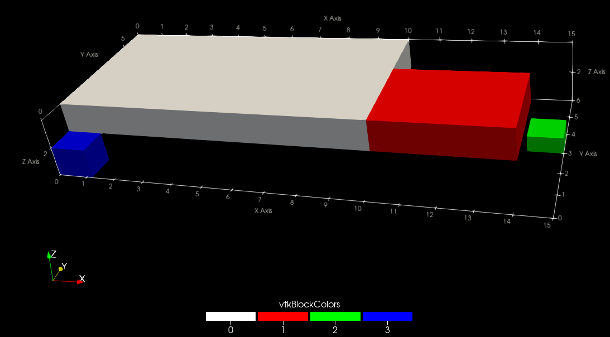

Multiblock files
Multiblock files (.vtm) are XML VTK files that can point to multiple other VTK files. They can be useful when working with complex geometries that are composed of multiple sub-domains.
To generate a multiblock file, it must first be initialised using vtk_multiblock:
vtm = vtk_multiblock("my_vtm_file")Then, each sub-grid can be generated with vtk_grid using vtm as the first argument:
# First block.
let vtk = vtk_grid(vtm, x1, y1, z1)
vtk["Pressure"] = p1
end
# Second block.
let vtk = vtk_grid(vtm, x2, y2, z2)
vtk["Pressure"] = p2
endAdditional blocks can also be added to the multiblock file with multiblock_add_block, which can contain any of the VTK files that WriteVTK supports:
# Create a block named "my_multiblock" and add it to `vtm`.
block = multiblock_add_block(vtm, "my_multiblock")
# Add a VTK file to `block`.
let vtk = vtk_grid(block, "another_file", x3, y3, z3)
vtk["Pressure"] = p3
endBlocks can be nested arbitrarily:
# Add more blocks.
another_block = multiblock_add_block(block, "my_multiblock-block")
yet_another_block = multiblock_add_block(another_block, "my_multiblock-block-block")And more VTK files may be added to the sub-blocks:
vtk = vtk_grid(yet_another_block, "my_deeply_nested_file", x4, y4, z4)Finally, only the multiblock file needs to be saved explicitly:
outfiles = vtk_save(vtm)WriteVTK will write out a multiblock VTK file that looks like something like this (in addition to all the VTK files contained in the multiblock file):
<?xml version="1.0" encoding="utf-8"?>
<VTKFile type="vtkMultiBlockDataSet" version="1.0" byte_order="LittleEndian">
<vtkMultiBlockDataSet>
<DataSet index="0" file="my_vtm_file_1.vti"/>
<DataSet index="1" file="my_vtm_file_2.vti"/>
<Block index="2" name="my_multiblock">
<DataSet index="0" file="another_file.vti" name="another_file"/>
<Block index="1" name="my_multiblock-block">
<Block index="0" name="my_multiblock-block-block">
<DataSet index="0" file="my_deeply_nested_file.vti" name="my_deeply_nested_file"/>
</Block>
</Block>
</Block>
</vtkMultiBlockDataSet>
</VTKFile>Working example
The full above example may also be written using the do-block syntax as follows:
x1, y1, z1 = 0:10, 1:6, 2:0.1:3
x2, y2, z2 = 10:14, 1:0.5:4, 2:0.1:3
x3, y3, z3 = 14:0.1:15, 3:0.5:4, 1:0.1:1.5
x4, y4, z4 = [0, 0.3, 1.2], range(0, 1, length = 3), [1, 1.3, 2]
saved_files = vtk_multiblock("full_domain") do vtm
# First block.
# By default, since the name of the file is not given, the file "full_domain_1.vti" will be saved.
vtk_grid(vtm, x1, y1, z1) do vtk
vtk["Pressure"] = rand(length(x1), length(y1), length(z1))
end
# Second block.
# Note that we can override the default filename.
# In this case, the filename will be "block_2.vti" instead of "full_domain_2.vti".
vtk_grid(vtm, "block_2", x2, y2, z2) do vtk
vtk["Pressure"] = rand(length(x2), length(y2), length(z2))
end
# Create a block named "my_multiblock" and add it to `vtm`.
block = multiblock_add_block(vtm, "my_multiblock")
# Add a VTK file to `block`.
vtk_grid(block, "another_file", x3, y3, z3) do vtk
vtk["Pressure"] = rand(length(x3), length(y3), length(z3))
end
# Add nested blocks.
another_block = multiblock_add_block(block, "my_multiblock-block")
yet_another_block = multiblock_add_block(another_block, "my_multiblock-block-block")
vtk_grid(yet_another_block, "my_deeply_nested_file", x4, y4, z4) do vtk
vtk["Pressure"] = rand(length(x4), length(y4), length(z4))
end
endThis will generate the following files:
julia> saved_files
5-element Vector{String}:
"full_domain.vtm"
"full_domain_1.vti"
"block_2.vti"
"another_file.vti"
"my_deeply_nested_file.vtr"By opening full_domain.vtm in ParaView, one can get the following picture:

Acknowledgements
Thanks to Daniel Ingraham for the implementation of recursive multiblock functionality.